영사기능사 (2004-02-01 기출문제)
1과목: 전기일반
1. 상호간의 전류 단위를 옳게 나타낸 것은?
- 2[A] = 200[mA]
- 1[A] = 10[mA]
- 1[A] = 1[mA]
- 2[A] = 2000[mA]
(정답률: 알수없음)

2. R[Ω]인 저항 m개의 병렬 합성저항 값은?
- m/R[Ω]
- mR[Ω]
- R/m[Ω]
- 1/mR[Ω]
(정답률: 알수없음)
3. 순시값 e = Emsin(120πt +π/3)인 파형의 주파수는 몇 [Hz]인가?
- 40[Hz]
- 60[Hz]
- 80[Hz]
- 120[Hz]
(정답률: 알수없음)
4. 전선의 고유 저항을 ρ[Ω.m], 길이 ℓ [m], 반지름 r이라 할 때 저항 [Ω]은?
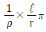
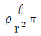
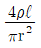
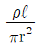
(정답률: 알수없음)
5. 역률 cosθ인 부하에 단상 V[V]의 전압을 가하여 I[A]의 부하전류가 흐를 때 부하전력 [W]의 식은?
- VI
- VI.sinθ
- VI.cosθ
- VI.cos2θ
(정답률: 알수없음)
6. 일정 전압의 직류전원에 저항을 접속하여 전류를 흘릴 때 저항값을 10[%] 감소시키면 전류는 어떻게 되겠는가?
- 약 10[%] 증가한다.
- 약 10[%] 감소한다.
- 약 11[%] 증가한다.
- 약 11[%] 감소한다.
(정답률: 알수없음)
7. 그림과 같은 정류회로에서 어느 점에 교류 입력을 연결하는가?
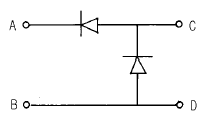
- A-D
- C-D
- A-C
- B-D
(정답률: 알수없음)
8. 교류 회로의 역률은?
- 피상전력/전압x전류
- 유효전력/전압x전류
- 무효전력/전압x전류
- 겉보기전력/전압x전류
(정답률: 알수없음)
9. 동력과 열량의 상호 환산계수중 틀린 것은?
- 1마력=3/4[kW]
- 1[J]=0.24[cal]
- 1[kWh]=3.6x105[J]
- 1[kWh]=860[kcal]
(정답률: 알수없음)
10. 그림에서 A-B간의 합성저항 값은?
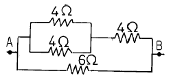
- 18[Ω]
- 10[Ω]
- 8[Ω]
- 3[Ω]
(정답률: 알수없음)
11. 어떤 부하에 흐르는 전류와 부하의 전압강하를 측정하려고 한다. 전류계와 전압계의 접속방법은?
- 전압계와 전류계를 부하에 모두 직렬 접속한다.
- 전압계와 전류계를 부하에 모두 병렬로 접속한다.
- 전류계는 부하에 직렬, 전압계는 부하에 병렬로 접속한다.
- 전류계는 부하에 병렬, 전압계는 부하에 직렬로 접속한다.
(정답률: 알수없음)
12.
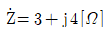
의 임피던스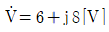
의 교류 전압을 가하면 흐르는 전류의 크기[A]는?- 1
- 2
- 3
- 5
(정답률: 알수없음)
13. 노란색을 빨간색과 초록색을 섞어서 만들 수 있을 때 빨간색의 스크린에 노란빛을 쪼이면 빨갛게 나타난다. 그런데 빨간색의 스크린에 나트륨등에서 나오는 노란색의 빛을 쪼이면 까맣게 보인다. 그 이유는?
- 빨간색의 스크린이 노란색 빛을 분산한다.
- 빨간색의 스크린이 노란색 빛을 흡수한다.
- 빨간색의 스크린은 노란빛을 제외한 모든 색의 빛을 흡수한다.
- 빨간색의 스크린은 빨간색을 제외한 모든 색의 빛을 반사한다.
(정답률: 알수없음)
14. 초점거리 10cm인 볼록렌즈와 15cm인 오목렌즈를 겹쳐 놓을 때 이 결합 렌즈의 초점거리와 렌즈의 종류는?
- 6cm, 볼록렌즈
- 6cm, 오목렌즈
- 30cm, 볼록렌즈
- 30cm, 오목렌즈
(정답률: 알수없음)
15. 인간이 물체를 볼 수 있는 이유는?
- 눈이 빛을 내어 물체를 비추기 때문
- 빛이 물체에 반사되어 눈에 들어오기 때문
- 빛이 눈에서 반사되어 물체로 가기 때문
- 물체가 빛을 흡수하기 때문
(정답률: 알수없음)
2과목: 렌즈 및 광원
16. 볼록거울에 의한 상의 내용으로 틀린 것은?
- 허초점을 만든다.
- 허상을 만든다.
- 도립상을 만든다.
- 축소된 상을 만든다.
(정답률: 알수없음)
17. 다음 중 영화촬영이나 투광기 및 영사용으로 적합하지 않은 전등은?
- 고압형광등
- 탄소아크등
- 크세논램프
- 할로겐전구
(정답률: 알수없음)
18. 평균 구면광도가 100[cd]인 광원으로 복사되는 광속은 약 몇 [lm]인가?
- 314[lm]
- 628[lm]
- 1256[lm]
- 33.5[lm]
(정답률: 알수없음)
19. 다음 색 중 유리내에서 속도가 제일 빠른 것은?
- 보라
- 파랑
- 노랑
- 빨강
(정답률: 알수없음)
20. 눈을 돋보기에 가까이 접근시켜 물체를 보았더니 5배의 허상이 나타났다. 명시거리가 25cm라면 이 돋보기의 초점 거리는 얼마인가?
- 약 4cm
- 약 6cm
- 약 8cm
- 약 10cm
(정답률: 알수없음)
21. 극장에서 영화 상영시 빛의 세기와 거리의 관계로 옳은 것은?
- 빛의 세기는 거리에 반비례한다.
- 빛의 세기는 거리에 비례한다.
- 빛의 세기는 거리의 제곱에 반비례한다.
- 빛의 세기는 거리의 제곱에 비례한다.
(정답률: 알수없음)
22. 일직선 상에서의 주기적인 왕복운동을 무엇이라 하는가?
- 단진동
- 원심력
- 원운동
- 관성
(정답률: 알수없음)
23. 증폭회로를 동작시키려면 입력전압이 가해지지 않은 상태에서 트랜지스터에 직류전압을 가하여 전류를 흘려주어야 하는데 이 때 가해 준 직류전압을 무엇이라 하는가?
- 입력전압
- 출력전압
- 증폭전압
- 바이어스전압
(정답률: 알수없음)
24. 다음 중 연산 증폭기에 대한 설명으로 틀린 것은?
- 증폭도가 매우 큰 직류 증폭 회로 이다.
- 입력 임피던스가 매우 크다.
- 출력 임피던스가 매우 크다.
- 입력 단자는 반전 입력과 비반전 입력의 2개가 있다.
(정답률: 알수없음)
25. 아래 그림은 무슨 회로인가?
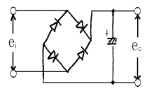
- 브릿지 정류 회로
- 전파 배전압 정류 회로
- 반파 정류 회로
- 전파 정류 회로
(정답률: 알수없음)
26. 교류 전원으로부터 직류 전원을 얻는 회로를 무엇이라 하는가?
- 정류 회로
- 검파 회로
- 증폭 회로
- 발진 회로
(정답률: 알수없음)
27. 다음 중 집적회로(IC)의 장점으로 옳지 않는 것은?
- 대규모 집적이 가능하다.
- 소자의 신뢰성을 향상시킬 수 있다.
- 대량생산으로 가격이 저렴하다.
- 개별 부품 제작 회로보다 고가이다.
(정답률: 알수없음)
28. 반도체에서 이동도를 옳게 기술한 것은?
- 온도가 증가하면서 함께 증가한다.
- 온도가 증가하면 오히려 감소한다.
- 저항률과 무관하다.
- 도전률과 무관하다.
(정답률: 알수없음)
29. 트랜지스터에서 VCE를 일정하게 유지했을 경우 IB와 IC의 관계를 그래프로 나타낸 것은?
- 입력 특성도
- 출력 특성도
- 전류 특성도
- 전압 특성도
(정답률: 알수없음)
30. 다이오드의 바이어스에 대한 설명이다. 바르지 못한 것은?
- 순바이어스된 다이오드는 잘 전도하지 않는다.
- P측에 (+)전압, n측에 (-)전압을 가하는 것을 순바이어스라 한다.
- 다이오드는 순바이어스면 닫힌 스위치처럼 작용한다.
- 다이오드는 역바이어스면 열린 스위치처럼 작용한다.
(정답률: 알수없음)
3과목: 증폭기 및 녹음재생
31. 음파가 전파되는 방향에 수직한 단위면적을 단위시간에 통과한 에너지량으로 나타낸 것은?
- 소리의 크기
- 소리의 세기
- 소리의 간섭
- 소리의 맵시
(정답률: 알수없음)
32. 음의 3요소에 대한 성질을 옳게 나타낸 것은?
- 고저-진폭, 세기-진동수, 맵시-파형
- 고저-파형, 세기-진동수, 맵시-진폭
- 고저-진동수, 세기-파형, 맵시-진폭
- 고저-진동수, 세기-진폭, 맵시-파형
(정답률: 알수없음)
33. 눈의 구조 중에서 수정체에 관한 설명으로 틀린 것은?
- 수정체는 투명체이다.
- 수정체는 광량에 따라 동공의 지름을 조절하여 상의 밝기를 조정한다.
- 수정체 양단의 모양체는 수정체의 곡률을 조정한다.
- 수정체를 통과하여 도립실상이 망막에 생기고 이를 시신경으로 감각한다.
(정답률: 알수없음)
34. 먼 곳은 잘 안 보이고 가까운 곳을 잘 볼 수 있는 눈은?
- 난시안
- 사시안
- 근시안
- 원시안
(정답률: 알수없음)
35. 시네마스코프 영화의 설명으로 맞는 것은?
- 애너모픽 렌즈를 사용, 세로폭을 넓게 만든 영화나 스크린 방식이다.
- 일반적으로 화면을 크게 하기 위하여 확장렌즈를 사용하도록 만든 영사기이다.
- 애너모픽렌즈를 사용해 촬영, 영사할 때 가로폭이 크게 되도록 만든 영화이다.
- 녹음방식을 개발한 회사의 상표명이다.
(정답률: 알수없음)
36. 영화상영을 연속동작으로 관람할 수 있는 신체 현상은?
- 눈부심현상
- 착시현상
- 잔상현상
- 순응현상
(정답률: 알수없음)
37. 영사기의 종류를 분류하면 대략 아래와 같다. 그 중 아닌 것은?
- 70mm
- 35mm
- 32mm
- 16mm
(정답률: 알수없음)
38. 영사기에서 무지부분이 스크린에 나타나지 않고 화면만 잘보이게 특정 부분을 가리기 위해 사용되는 것의 명칭은?
- 스프라케트
- 슬로트
- 플라이휘일
- 마스크
(정답률: 알수없음)
39. 35mm 영사기에서 인터스프라켓트의 회전과 정지에 대한 비율로 맞는 것은?( 단, 한칸의 화면을 구동할 때)
- 1/96 : 3/96초
- 1/72 : 3/72초
- 1/48 : 3/48초
- 1/24 : 3/24초
(정답률: 알수없음)
40. 만약 상영중 필름의 손상 또는 기계의 고장이 발생하였다면 아래 내용중 제일 먼저 조치하여야 할 것은?
- 상영중인 A영사기를 멈추고 B영사기로 작동시킨 후 조사하여야 한다.
- 차광핸들을 닫고 즉시 영사기를 멈춘다.
- 극장 관리자에게 알린다.
- 응급조치 사항이 끝난후 고장 부분의 신속한 A/S를 받도록 한다.
(정답률: 알수없음)
41. 다음 중 영사기의 안전장치로 구분될 수 없는 것은?
- 자동방화 샷다
- 안전 레바
- 도우저
- 스프라켓트
(정답률: 알수없음)
42. 크세논 아크등의 원리를 설명한 것중 틀린 것은?
- 석영구 관(管)안에 고압 크세논가스 봉입
- 2개의 전극으로 점화하는 것
- 그 빛은 태양의 주광에 근접한 순백으로 온도 6000K
- 자외선에 근접한 광선만 방출로 태양과 온도가 같음
(정답률: 알수없음)
43. Xenon 램프의 취급사용상 바르지 못한 것은?
- 규정이내의 전류를 사용해야 한다.
- 램프를 갈아 끼울 때는 깨끗한 장갑을 사용, 지문이나 기름이 묻지 않도록 한다.
- 충격을 주지 않도록 하고 사용하지 않을 때는 보호커버를 씌워야 한다.
- 램프를 끈 후에는 바로 전원스위치도 모두 off 시켜야 한다.
(정답률: 알수없음)
44. 그림에서 매그-오프트 프린트(Mag-opt print)의 단 한개의 옵티컬트랙(optical track)이 사용되는 곳에서 재생되는 스피커는?
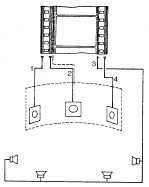
- 2,3번 스피커만 재생된다.
- 1,4번 스피커만 재생된다.
- 1,2,3,4번 스피커 모두 재생된다.
- 2번 중앙스피커만 재생된다.
(정답률: 알수없음)
45. 녹음기의 재생헤드에 대한 설명중 틀린 것은?
- 고역의 재생 범위를 넓히려면 공극길이를 넓게 한다.
- 공극 길이가 재생신호 파장의 정수배인 때는 출력이 나타나지 않는다.
- 철심의 초투자율이 크다.
- 감은 회수는 되도록 많이 감는다.
(정답률: 알수없음)
4과목: 영사기와 필름의 구조원리
46. 35mm 영사필름은 보통 몇 m를 1권(券)으로 하는가?
- 약 200m
- 약 300m
- 약 400m
- 약 500m
(정답률: 알수없음)
47. 필름을 보호하고 필름화면 소비를 줄이기 위해 영사필름 맨앞에 앞붙이(리이더)를 붙이는데 그 적정 길이는?
- 0.1 ~ 0.5m
- 0.5 ~ 1.0m
- 1.5 ~ 2.0m
- 2.0 ~ 2.5m
(정답률: 알수없음)
48. 많은 회수의 상영을 요구하는 포지티브용으로 사용되고 있는 퍼포레이션의 형은 다음 중 어느 것인가?
- KS형
- BH형
- CS형
- KS, BH, CS형 모두
(정답률: 알수없음)
49. 2대의 영사기로 연속 상영하는 영화관에서 상영도중 토오키(발성)가 잠깐 울림이 있음을 느꼈다. 그 원인으로 가장 타당한 것은?
- 절환장치(체인지레바)의 조작이 늦어졌기 때문이다.
- 기계의 절환순간에 필름의 진행속도가 늦어졌기 때문이다.
- 영사렌즈의 촛점이 맞지 않았기 때문이다.
- 필름의 접속부분이 불안정하기 때문이다.
(정답률: 알수없음)
50. 필름의 세정(洗淨)방법으로 적당한 경우는?
- 부드러운 붓으로 닦는다.
- 탈지면을 가제로 싸서 닦는다.
- 얇은 가죽으로 닦는다.
- 물걸레로 깨끗히 닦는다.
(정답률: 알수없음)
51. 영사용 필름에 기름과 먼지가 많이 묻으면 영사에 많은 영향이 미친다. 이 영향에 해당되지 않는 것은?
- 필름이 손상된다.
- 화면이 얼룩지고 선명치 않다.
- 영사기가 빨리 노후화된다.
- 렌즈 코팅이 벗겨진다.
(정답률: 알수없음)
52. 반사경이 붙어 있는 크세논(Xenon) 램프의 장착 방향 및 방식은?
- 수평식
- 수직식
- 30° 경사식
- 45° 경사식
(정답률: 알수없음)
53. 70mm 필름 스트라이프(Stripe)프린트에서 녹음된 사운드트랙(Sound Track)의 수는 보통 몇 개(혹은 본)인가?
- 2개
- 4개
- 6개
- 8개
(정답률: 알수없음)
54. 영사 필름의 육안검사시 주의해서 보아야 할 주요 내용이 아닌 것은?
- 리더(Leader)와 트레일러(Trailer)의 상태 여부
- 필름의 접착 부분 상태 여부
- 자막 또는 녹음 상태 여부
- 필름의 손상 상태 여부
(정답률: 알수없음)
55. 영사기의 안정기에 대하여 설명이 바르지 못한 것은?
- 방전등의 전압전류 특성은 부특성이므로 일정 전압이 전원에 연결하면 전류가 급속히 증대한다.
- 교류회로에서는 초오크 코일을 써서 저항을 쓰는 경우의 손실을 방지한다.
- 전류의 안정을 얻기위하여 접속하는 전해 콘덴서를 안정기라고 한다.
- 금속체와 같이 전류의 증가와 더불어 전압이 상승하는 것을 정특성이라고 한다.
(정답률: 알수없음)
56. 70mm 영화필름 1커트(cut)의 화면 사이즈는?
- 약 49 x 22mm
- 약 70 x 25mm
- 약 35 x 25mm
- 약 49 x 35mm
(정답률: 알수없음)
57. 그림의 회로는?
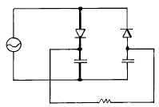
- 반파정류 회로
- 전파정류 회로
- 배전압정류 회로
- 3배전압정류 회로
(정답률: 알수없음)
58. 아크란 2개의 카본을 전극으로 접촉시켜 전류를 흘려 불꽃을 내는 방전현상을 말하는데 이 때 양극의 온도는?
- 약 2,000℃
- 약 3,000℃
- 약 3,500℃
- 약 5,000℃
(정답률: 알수없음)
59. 다음 중 크세논 램프(Xenon Lamp)는 어떤 종류에 속하는가?
- 불활성기체를 넣은 전자관이다.
- 2극 진공관의 일종이다.
- 진공 방전관이다.
- 텅스텐 전극을 넣은 백열등이다.
(정답률: 알수없음)
60. 칼라필름의 3색광을 감광하는 곳은?
- 보호층
- 방지층
- 유제층
- 중간층
(정답률: 알수없음)
이유는 전류의 단위인 아프(Ampere)는 1A = 1000mA 이기 때문입니다. 따라서 2A는 2000mA가 되는 것입니다.